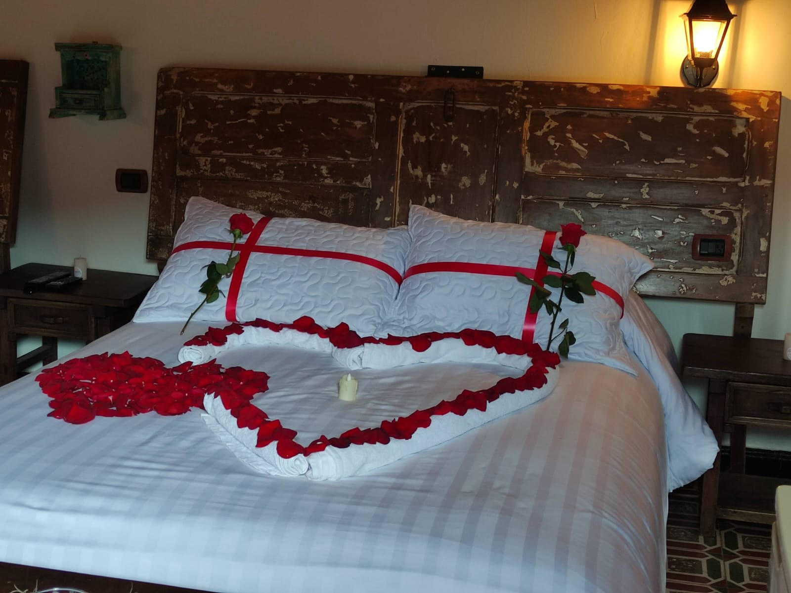

Disfruta de una experiencia única en nuestra cabaña campestre de estilo rústico y colonial. Con capacidad para 6 personas, esta acogedora cabaña cuenta con una habitación principal y dos altillos, ideal para grupos familiares o amigos. Equipado con una cocina completa, dos baños, comedor, sala y una chimenea que invita a relajarse. Además, podrás admirar las impresionantes vistas al Pantano de Vargas, un lugar perfecto para desconectar y disfrutar de la naturaleza en su máxima expresión.
Chalet superior Illari
Escápate al encanto de un espacio rústico y colonial en nuestro acogedor apartaestudio, ideal para parejas o pequeños grupos. Este amplio ambiente único combina una cocina, comedor y dos camas muy cómodas, acompañadas de un vestier y baño privado. La vista privilegiada al Monumento de los 14 Lanceros, en el Pantano de Vargas, completa la experiencia, creando un entorno de paz y belleza natural que hará de tu estadía un momento inolvidable.

Glamping Illari
Vive la naturaleza sin renunciar al confort en nuestro glamping campestre. Con una cama principal y un sofá-cama, este refugio es perfecto para quienes buscan una experiencia única. Equipado con nevera, cafetera y calentador, te ofrece todo lo necesario para una estadía cómoda. Además, podrás disfrutar de un espectacular baño de vidrio que se integra a la naturaleza, mientras contemplas la vista inigualable del Valle del Pantano de Vargas, rodeado de tranquilidad y belleza.
Pueblito Boyacense Hotel Boutique
Ubicado en el pintoresco Pueblito Boyacense, este hotel ofrece varias alcobas adaptadas a tus necesidades, con baños equipados con tina para un descanso absoluto. Su diseño único y acogedor te hará sentir como en casa, mientras disfrutas de la esencia del lugar. Además, cuenta con parqueo dentro del pueblito, lo que te permitirá explorar cómodamente este encantador destino, todo en una ubicación privilegiada en la Manzana de Villa de Leyva.